Simulation
Applied simulation work bridging mechanical systems and computational modeling — part of the research grounding described on the Research page.
Simulation Study — ANSYS Static Structural
Brake System Simulation
A static structural analysis of a wheel brake/lever assembly in ANSYS, evaluating equivalent (von-Mises) stress and displacement under an applied braking load. The arm was fixed at its mounting point, the rotor rim was given a frictionless support, and a 300 lbf force was applied at the lever end to represent the braking input; a displacement constraint at the pivot hole restrained out-of-plane motion while allowing rotation.
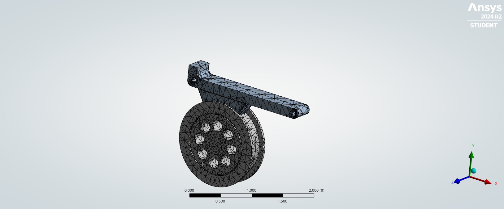
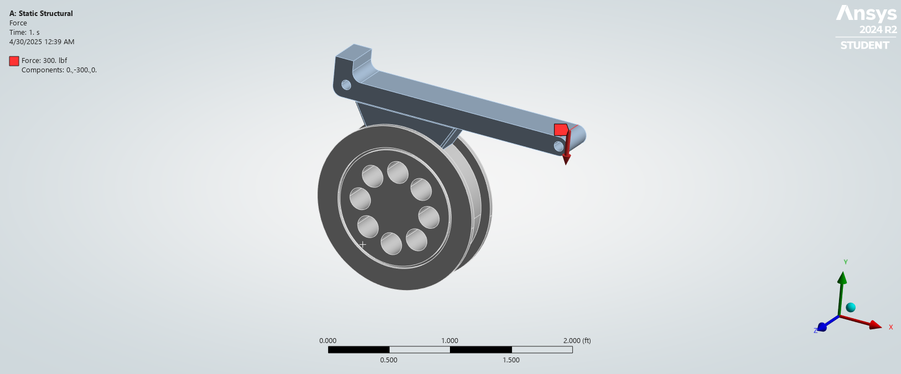
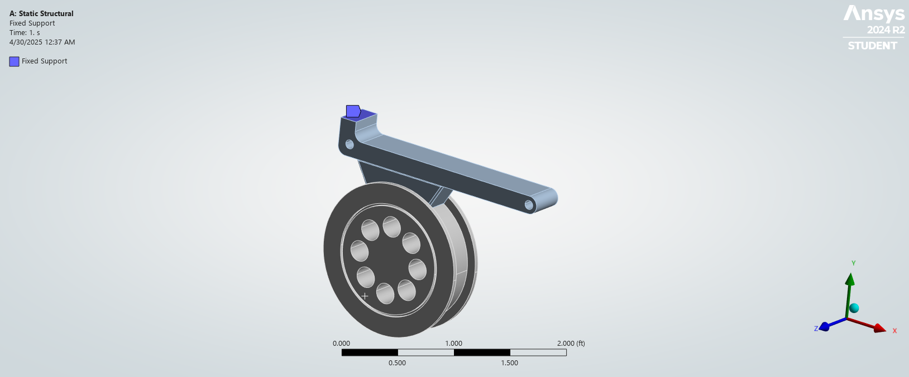
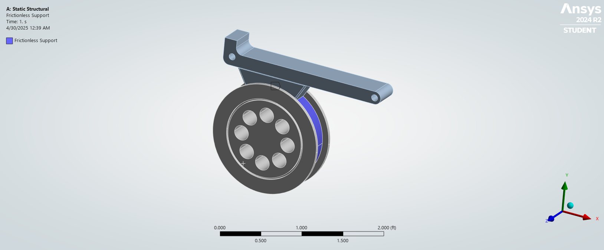
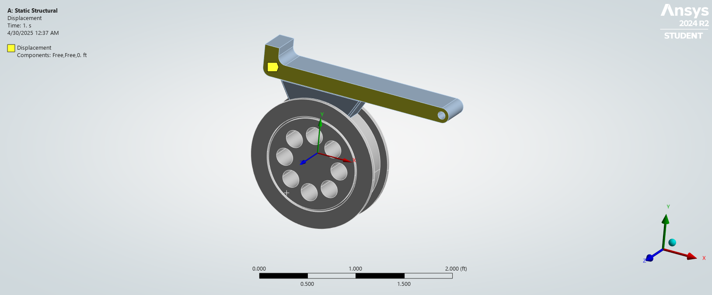
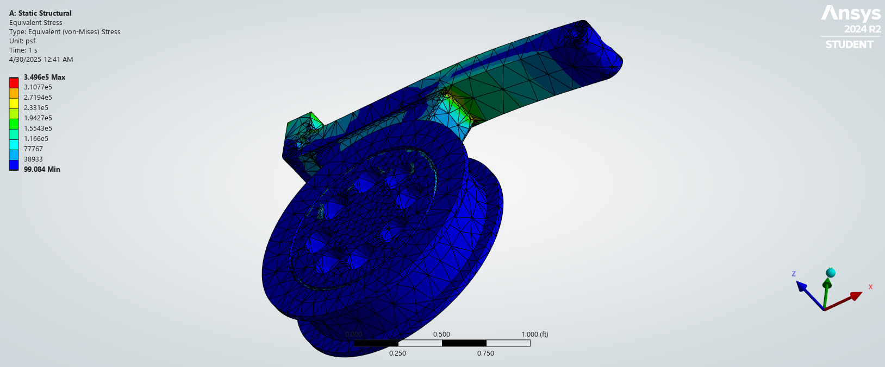
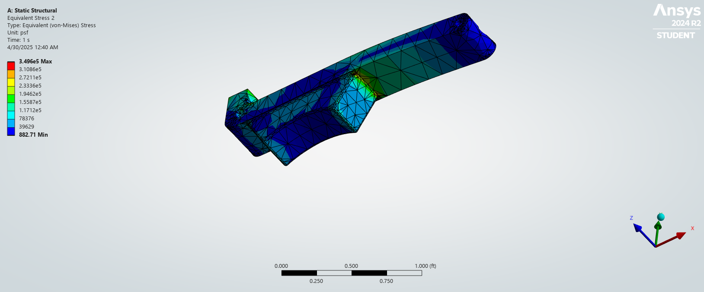
Simulation Study — SolidWorks Flow Simulation
Pipe Flow Simulation
An internal flow simulation of a multi-bend piping loop in SolidWorks Flow Simulation, looking at fluid temperature, flow trajectories, and boundary layer development through the bends and junctions. Flow trajectories are colored by vorticity, highlighting where the flow separates and swirls as it turns through each elbow.
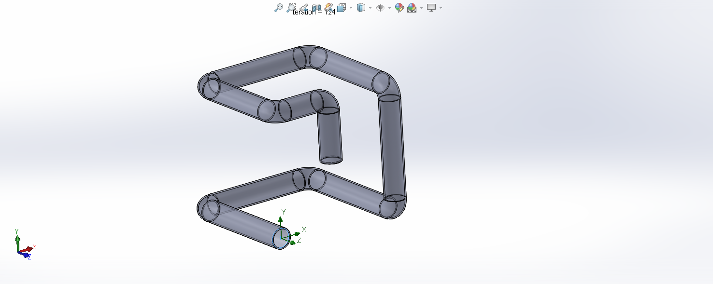
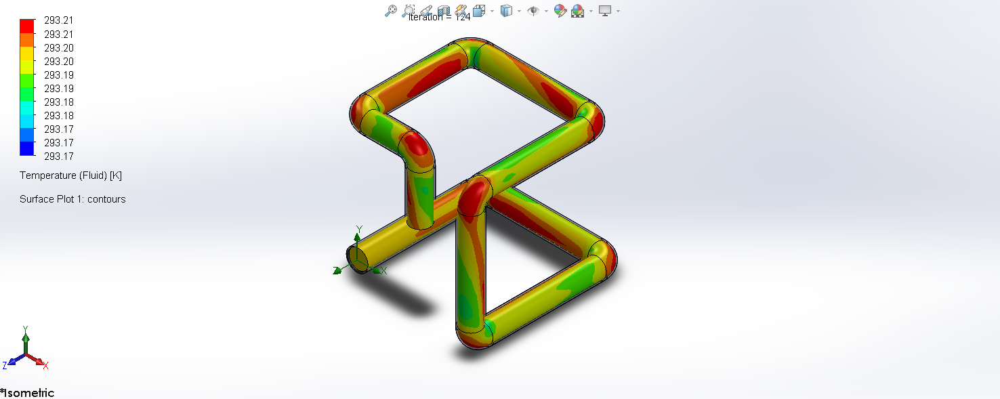
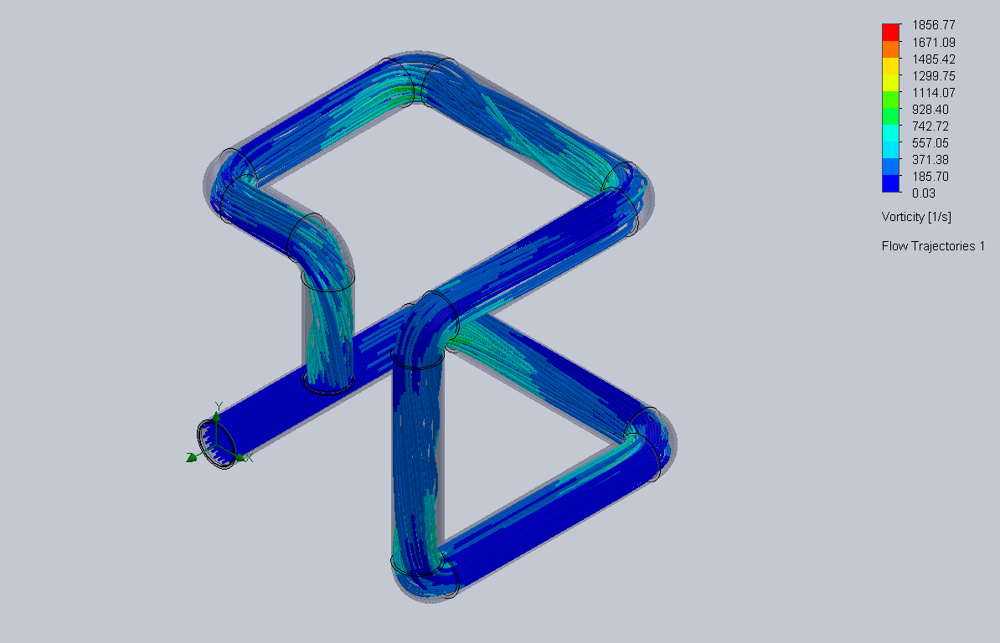
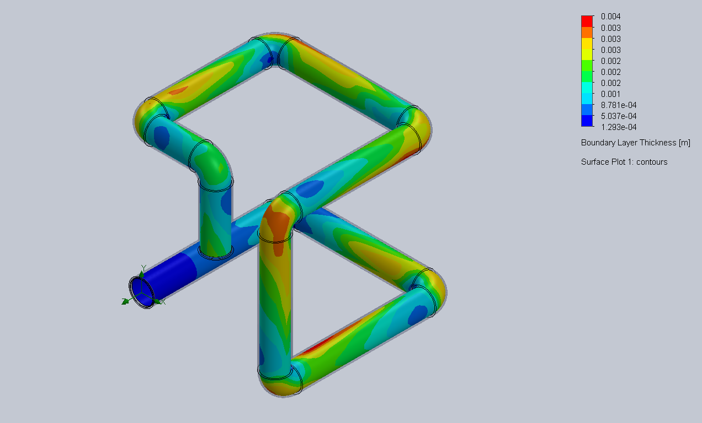
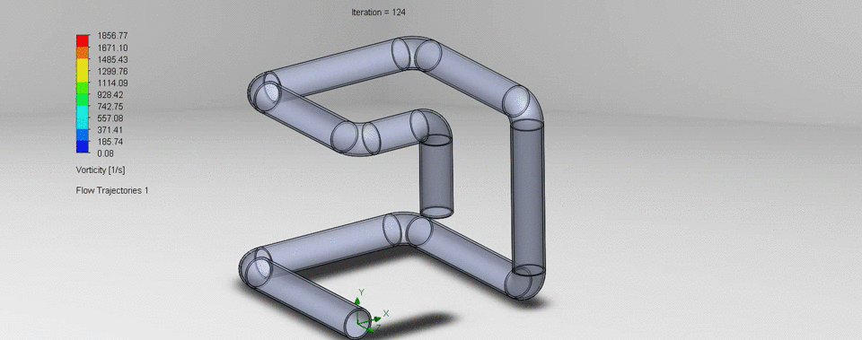
Download Pipe Model (SolidWorks .SLDPRT) → · Download Pipe Model (.IGS) →
Simulation Study — ANSYS Static Structural
Gear Contact Stress Analysis
A static structural analysis of a meshing spur gear pair in ANSYS, evaluating equivalent (von-Mises) stress, contact behavior, and total deformation under an applied torque. Equal and opposite moments were applied to the driver and driven gears to represent the transmitted torque, with a fixed support at both bores; the mesh was refined at the tooth contact zone to resolve the local stress concentration.
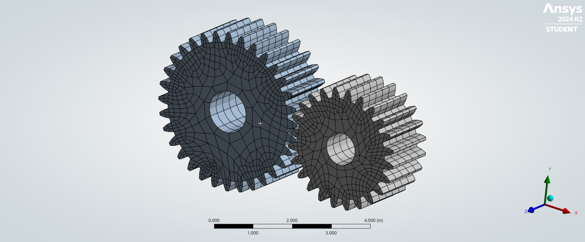
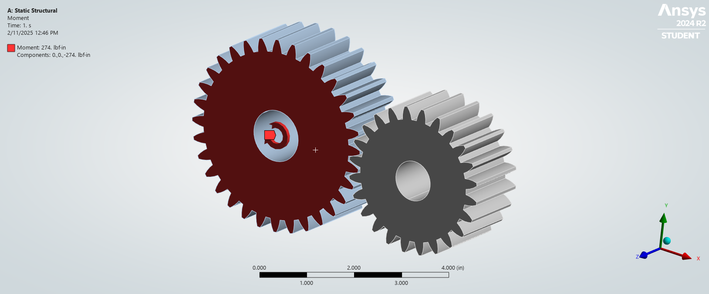
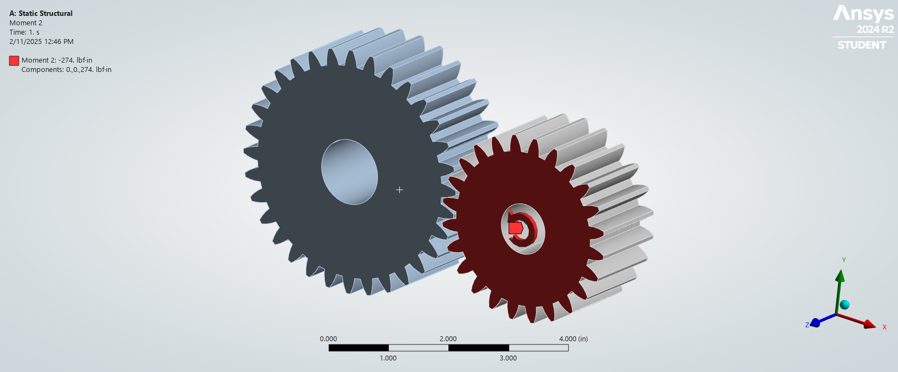
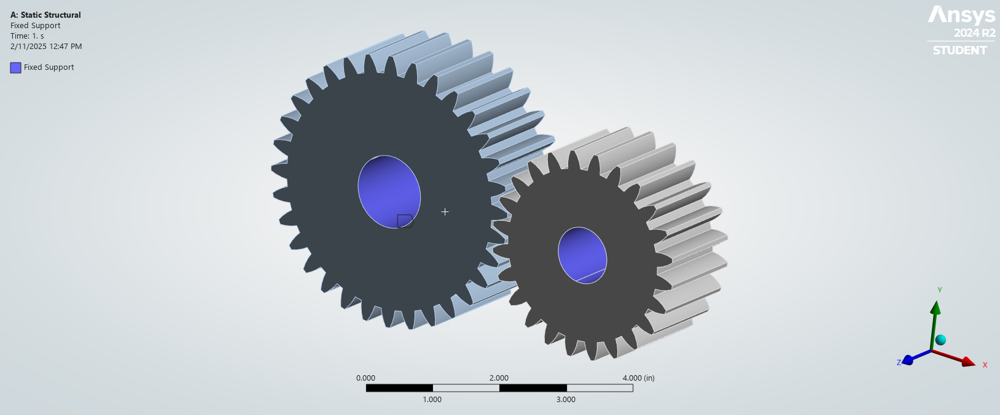
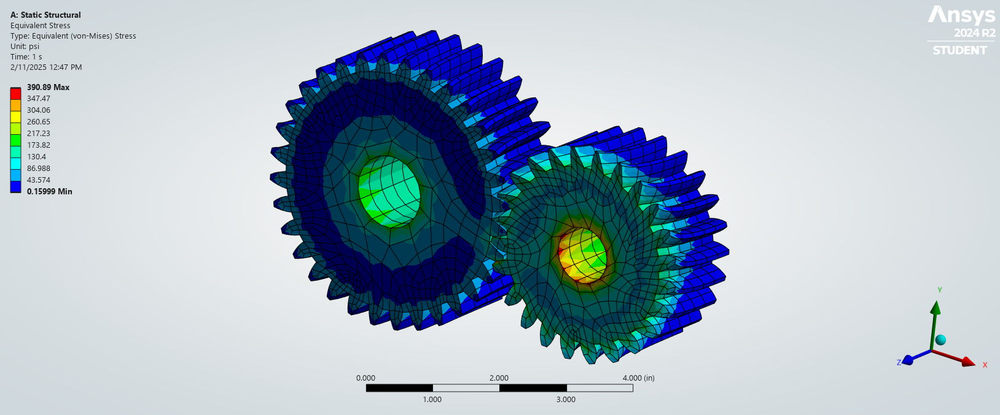
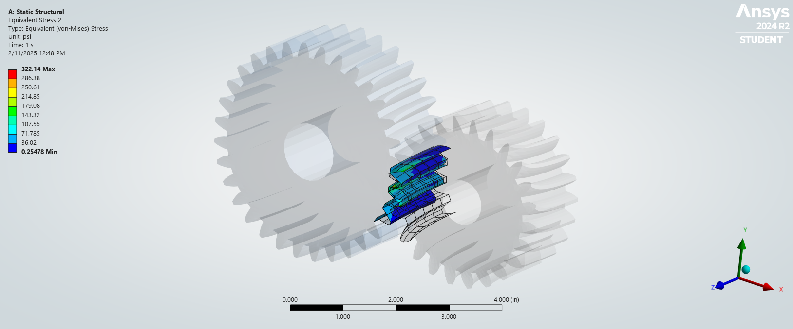
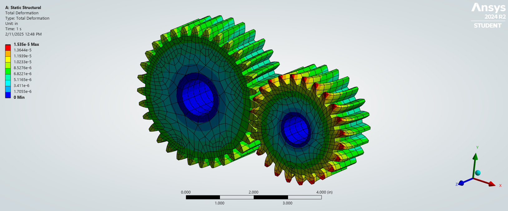